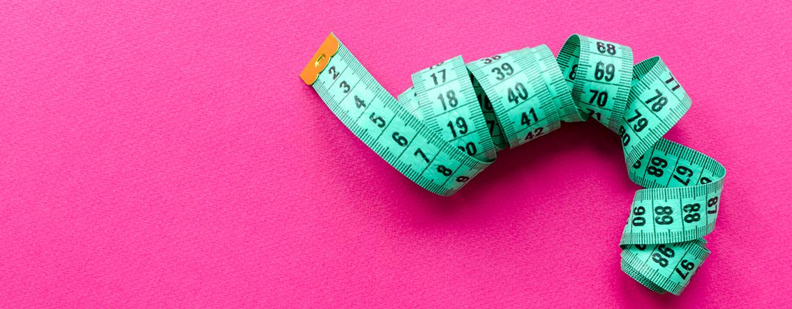

Jugo de Naranja, Divertida Animación - Por Casi Creativo
Jugo, Zumo de naranja, saludable o no? Vaso de jugo de naranja en el desayuno?
Método del Plato Saludable - Por Saludiet
En esta ocasión os presentamos una herramienta educativa en materia de nutrición, muy sencilla y cómoda.
El método del plato o también llamado el plato del buen comer. Todos los alimentos básicos de la dieta Mediterranea tienen sitio en una dieta para perder peso.
Aprende a incluirlos en las proporciones adecuadas para que puedas seguir una dieta sana que te mantenga en un peso saludable
Menu Semanal Para Adelgazar Hasta 8 Kilos en un Mes con una Dieta Equilibrada- Por Guía del Niño
Este menú semanal elaborado por la especialista en nutrición Maite Izquierdo te hará perder hasta 8 kilos en un mes sin renunciar a comer pan o arroz. Es una dieta equilibrada que no pondrá en peligro tu salud. Eso sí, tendrás que controlar las cantidades y la presencia de alimentos de poco valor nutricional y que aportan muchas calorías.
En qué consiste la dieta
Elaborada por nuestra especialista en nutrición Maite Izquierdo, esta dieta te asegura una alimentación equilibrada y sana. Se basa en el control de las calorías y su objetivo es perder hasta 8 kg en un mes sin que sufran tus reservas.
Cuándo hacer esta dieta
Es perfecta para eliminar los kilos que te hayan sobrado después de la lactancia. También te valdrá para luchar contra esos kilos de más que año tras año y de forma insidiosa se va sumando a los ya ganados. Un día te convences y declaras: "¡basta! Ha llegado el momento de empezar a comer bien los lunes, martes, miércoles, jueves, viernes, sábado y domingo".
Las ventajas de la dieta
1 - Contiene todos los grupos de alimentos: proteínas, lípidos e hidratos de carbono. Es rica en fibra, vitaminas y minerales. Comerás de todo, hasta pan, arroz o pasta.
2 - No es aburrida ya que abarca una amplia gama de alimentos.
3 - Adelgazarás despacio pero a buen ritmo y aprenderás a comer sano.
No es una dieta "milagro
Como cualquier dieta, necesitas constancia y paciencia hasta llegar a tus objetivos.
No podrás salirte de los alimentos señalados pero sí variar el orden de los días. Tenlo en cuenta para organizar tus comidas fuera de casa.
Una vez alcanzado el objetivo deseado, sigue cuidando tu alimentación para estabilizar tu peso.
No olvides que si no cambias definitivamente tus costumbres alimentarias, volverás a ganar peso a la misma velocidad que los has perdido.
Buenas Ideas Para el Desayuno, Al Cole con Energía - Por Guía del Niño
Maestros, pediatras y especialistas en nutrición no se cansan de alabar las virtudes del desayuno y de alertar sobre las negativas consecuencias de saltarse la primera comida del día. Pero, ¿cómo lograr que desayune bien un pequeño inapetente que le hace ascos a la leche y las galletas?
Maestros, pediatras y especialistas en nutrición no se cansan de alabar las virtudes del desayuno y de alertar sobre las negativas consecuencias de saltarse la primera comida del día. Pero, ¿cómo lograr que desayune bien un pequeño inapetente que le hace ascos a la leche y las galletas?
Para empezar bien el día
Si tu hijo se niega sistemáticamente a desayunar antes de ir al cole, prueba a poner en práctica estas medidas:
1 - Dale de cenar temprano y procura que esta comida no sea muy abundante.
2 - Antes de acostarte, deja la mesa puesta, la fruta lavada, y reserva un estante del armario de la cocina para productos del desayuno: galletas, cereales, pan, mermelada, cacao, miel, azúcar…
3 - Habla con tu hijo y averigua sus preferencias. Puede que prefiera un batido fresquito a un vaso de leche caliente o un sólido sandwich a las tradicionales tostadas.
4 - Levántale pronto, con el tiempo suficiente para desperezarse, vestirse y sentarse tranquilamente a la mesa.
5 - Desayuna con él, en vez de salir de la cocina y ponerte a hacer las camas. La mesa es un espacio para compartir.
6 - Y si algún día no has tenido más remedio que descuidar el desayuno, siempre queda el recurso de tomar algo a media mañana: un pequeño bocadillo es la manera de completarlo si no ha sido suficiente.
Lo que no debe faltar
Lo que necesitamos a primera hora del día es reponer nuestras reservas de glucosa, por lo que los alimentos que ingerimos deben aportar glúcidos e hidratos de carbono: principalmente cereales y frutas. Y como las demandas de calcio son muy elevadas en la infancia, es necesario incluir una ración de lácteos.
Los desayunos de niños y adultos suelen ser escasos, excesivamente dulces, monótonos y desequilibrados. Un buen desayuno ha de contener:
1 - Más cantidad de alimentos. En total, ha de aportar el 25% del total de calorías diarias.
2 - Más fruta. El desayuno es el momento ideal para incluir una de las tres piezas de fruta que debe tomar tu hijo cada día.
3 - Menos grasas. Los productos de bollería industrial son ricos en grasas saturadas y, por lo tanto, su consumo debe ser esporádico. La mantequilla y la margarina deben utilizarse de forma ocasional, ya que no aportan ningún nutriente y sí mucha grasa.
4 - Menos azúcar. Los niños toman muchos alimentos dulces para desayunar: el cacao de la leche, los cereales azucarados, las galletas, la mermelada… Procura que el de tu hijo contenga solo uno de estos productos. En cuanto a los cereales, elige los que tengan un nivel más bajo de azúcar, grasas saturadas e hidrogenadas y sal, y carezcan de chocolate y aditivos.
5 - Más fibra. Tanto la fruta como los cereales, si son integrales, aportan cantidades suficientes.
¿Cuántas calorías necesitas consumir? - Por Dr. De La Rosa
Escuchamos una y otra vez que para bajar de peso necesitamos consumir menos calorías de las que gastamos y para subir de peso necesitamos lo opuesto.
Pero esto consejo en la práctica funciona?
En este video vamos a ver como impactan las calorías en tu cuerpo y determinar si contar calorías es realmente un método efectivo o no para regular el peso corporal.
¿Qué es el ayuno intermitente? ¿Tiene beneficios para la salud? - Por Mayo Clinic
El ayuno intermitente significa que no comes durante un período cada día o semana. Algunos enfoques populares para el ayuno intermitente incluyen:
1 - Ayuno de días alternos. Come una dieta normal un día y ayuna completamente o haz una pequeña comida (menos de 500 calorías) al día siguiente.
2 - Ayuno 5:2. Come una dieta normal cinco días a la semana y ayuna dos días a la semana.
3 - Ayuno diario con tiempo restringido. Come con normalidad, pero solo dentro de un lapso de ocho horas cada día. Por ejemplo, no desayunes pero almuerza al mediodía y cena a las 8 p. m.
Algunos estudios sugieren que el ayuno en días alternos es casi tan eficaz como una típica dieta baja en calorías para bajar de peso. Eso parece razonable porque reducir la cantidad de calorías que comes debería ayudarte a perder peso.
¿Puede el ayuno intermitente mejorar tu salud? Perder peso y hacer actividad física ayuda a reducir el riesgo de enfermedades relacionadas con la obesidad, como la diabetes, la apnea del sueño y algunos tipos de cáncer. Para estas enfermedades, el ayuno intermitente parece ser tan beneficioso como cualquier otro tipo de dieta que reduce las calorías totales.
Algunas investigaciones sugieren que el ayuno intermitente puede ser más beneficioso que otras dietas para reducir la inflamación y mejorar las afecciones asociadas con la inflamación, como por ejemplo: enfermedad de alzheimer, esclerosis múltiple, artritis, asma y accidentes cardiovasculares.
Es importante señalar que el ayuno intermitente puede tener efectos secundarios desagradables, pero normalmente desaparecen en un mes. Los efectos secundarios pueden incluir los siguientes: hambre, fatiga, insomnio, náuseas y dolores de cabeza.
El ayuno intermitente es seguro para mucha gente, pero no para todos. Saltarte las comidas puede no ser la mejor manera de controlar tu peso si estás embarazada o amamantando. Si tienes cálculos renales, reflujo gastroesofágico, diabetes u otros problemas médicos, habla con tu médico antes de comenzar el ayuno intermitente.